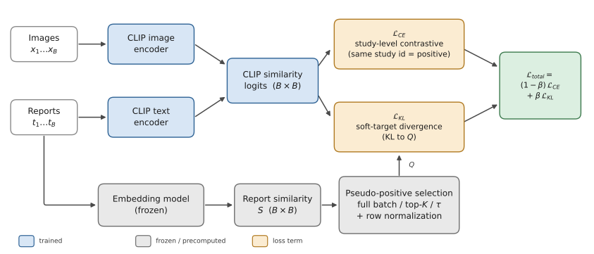

Why retrieval, and why radiology?
Radiologists already do a version of this task by hand: when reading a chest X-ray, it's common to pull up a patient's prior studies, or to recall a similar case, to help interpret what's in front of them. A model that can reliably retrieve the clinically closest report for a given image, or the closest image for a given report, could support that workflow: case review, decision support, or simply building intuition from similar cases.
The dominant tool for this kind of cross-modal retrieval is CLIP (Contrastive Language-Image Pre-training). CLIP learns a shared embedding space for images and text by pulling matched pairs together and pushing every other pairing in the training batch apart. That works well when non-matches really are unrelated: a photo of a dog is unrelated to a caption about a bicycle. It works less well in radiology, where two different patients' reports might both say "moderate cardiomegaly, no acute findings," and treating those as a hard negative pair actively fights against what the model should be learning.
The idea: soft targets from report similarity
This isn't a new observation. SoftCLIP (Gao et al., 2023) introduced soft supervision for general vision-language training using visual-region and tag similarity, and Ko & Park (2025) built a chest X-ray-specific version that combines textual similarity, clinical-label similarity, and knowledge-graph similarity. Our project asks a narrower question: if you build soft supervision purely from report-embedding similarity, which design choices actually move the needle?
Concretely, we replace CLIP's one-hot supervision with a hybrid loss. For every image-report pair, we still use the standard CLIP cross-entropy loss against the true match, but we add a KL-divergence term that pulls the model's retrieval distribution toward a soft target: a distribution built from how similar the true report's embedding is to every other report in the batch.

Soft-CLIP training for one batch. The CLIP encoders are fine-tuned (blue) and produce the similarity logits used by both loss terms. In parallel the same reports are embedded by a frozen model (grey), giving a report-report similarity matrix from which pseudo-positives are selected and row-normalized into the soft target. β sets how much the soft term counts.
Two knobs control how this behaves. First, which reports count as pseudo-positives: do we take the K most similar reports in the batch for every sample (fixed top-K), or do we take every report whose similarity clears some threshold τ (which lets the number of pseudo-positives vary per sample)? Second, how much weight the soft term gets, via β in the loss above. We also had to pick which embedding model turns report text into the vectors this whole scheme depends on.
The data
We used MIMIC-CXR, a large public dataset of chest radiographs paired with free-text radiology reports, split into Findings and Impression sections. After removing studies with empty text and images that failed to load, we were left with 249,018 training and 2,018 validation image-report pairs. Training runs at the image level, but because a single study can include multiple X-ray views, evaluation is done at the study level, grouping all images that share a study_id.
We started from a pretrained openai/clip-vit-base-patch32 checkpoint and fine-tuned it with a study-level contrastive loss, so that multiple images from the same study count as positives for each other. Each configuration trained for up to 10 epochs (about 7 minutes per epoch on a single RTX 6000) with early stopping, and was evaluated once with a fixed random seed.
Picking an embedding model
We compared three text embedding models for constructing report similarity: BioClinicalBERT (general clinical text), BiomedVLP-CXR-BERT (pretrained specifically on chest X-ray reports), and EmbeddingGemma (a general-purpose dense embedding model). Rather than training a full Soft-CLIP model for each candidate, we used a cheap proxy: the mean and spread of cosine similarity across non-identical report pairs. A model that assigns uniformly high similarity to almost everything is not useful for building a soft-positive structure. It can't tell "somewhat related" from "basically the same."
| Embedding source | Mean similarity | Std |
|---|
| BioClinicalBERT | 0.947 | 0.037 |
| EmbeddingGemma | 0.723 | 0.094 |
| BiomedVLP-CXR-BERT | 0.581 | 0.127 |
BiomedVLP-CXR-BERT gave the lowest mean and widest spread, so we used it going forward. We then compared three ways to pool its output: the CLS token, mean pooling, and its projected representation (the space it was actually trained to align with images in). The projected representation was the clear winner, with a mean similarity of just 0.035.

Two chest X-rays of the same patient, taken at different visits. Our model kept matching them — because of the wires, not the diagnosis.

A query image (portable, semi-erect view) from one of our retrieval examples.

Two images from the same patient, different visits — retrieval tracked the patient more than the finding.
Fixed top-K vs. a similarity threshold
A fixed top-K approach selects the same number of pseudo-positives for every report, even though some reports have many close matches and others have very few. A similarity threshold allows this number to vary. Reports with several similar neighbours receive more pseudo-positives, while unusual reports receive fewer or none. We tested thresholds at the 90th, 95th, and 97th percentiles of the training similarities, with τ ∈ {0.681, 0.828, 0.894}. These retained roughly 10%, 5%, and 3% of the pairs per row.

Distribution of report-report cosine similarity on the training split (projected BiomedVLP-CXR-BERT embeddings), with the tested threshold percentiles marked.
The strictest threshold, τ = 0.894, performed best on almost every metric in both retrieval directions. For fixed top-K, no single value of K was consistently best. Different values performed better on different metrics, with no clear pattern. This suggests that selecting sufficiently similar reports matters more than assigning every report the same number of pseudo-positives.
Similarity threshold
| τ | I2T R@1 | I2T MRR | T2I R@1 | T2I MRR |
|---|
| 0.681 (p90) | 11.55 | 0.1826 | 12.09 | 0.2151 |
| 0.828 (p95) | 11.69 | 0.1860 | 10.56 | 0.2080 |
| 0.894 (p97) | 11.60 | 0.1867 | 12.54 | 0.2236 |
Fixed top-K
| K | I2T R@1 | I2T MRR | T2I R@1 | T2I MRR |
|---|
| 5 | 11.79 | 0.1880 | 11.20 | 0.2147 |
| 10 | 12.29 | 0.1903 | 11.05 | 0.2136 |
| 20 | 11.89 | 0.1868 | 12.29 | 0.2205 |
How much soft supervision is too much?
With the threshold-based selection settled, we swept β ∈ {0.0, 0.1, 0.3, 0.5, 0.7, 1.0}. β = 0.0 is just the hard-CLIP baseline; β = 1.0 drops the hard loss entirely and trains only on the soft KL term.
| β | I2T R@1 | I2T MRR | T2I R@1 | T2I MRR |
|---|
| 0.0 (hard baseline) | 9.66 | 0.1645 | 11.25 | 0.2005 |
| 0.1 | 10.31 | 0.1687 | 11.00 | 0.2015 |
| 0.3 | 11.94 | 0.1900 | 12.14 | 0.2225 |
| 0.5 | 11.65 | 0.1869 | 11.00 | 0.2145 |
| 0.7 | 10.65 | 0.1773 | 10.60 | 0.2073 |
| 1.0 (soft only) | 10.51 | 0.1718 | 11.45 | 0.2034 |
β = 0.3 was the clear winner in both directions. Both extremes underperformed: too little soft weight barely changes anything, and dropping the hard loss entirely (β = 1.0) removes the direct incentive to align each image with its own report, and performance suffers. Soft supervision works best as a moderate complement to the original objective, not a replacement for it.
Putting it together, our best configuration used BiomedVLP-CXR-BERT projected embeddings over the full report text, a threshold of τ = 0.894, and β = 0.3. It increased image-to-text R@1 from 9.66% to 11.94% and text-to-image R@1 from 11.25% to 12.14%.
The twist: what is the model actually keying on?
MIMIC-CXR has a quirk that matters here: the same patient can appear multiple times, sometimes with near-identical report wording across visits. We therefore scored our final model under four definitions of a correct match, from strict to permissive: an exact study match, a text-identical match regardless of study, a de-duplicated version of that, and a same-patient match, which credits any retrieval from the same patient at any visit, regardless of what that visit was actually about.
| Match definition | I2T R@1 | I2T MRR | T2I R@1 | T2I MRR |
|---|
| Exact study | 11.65 | 0.1864 | 11.55 | 0.2180 |
| Clinical (identical text) | 11.65 | 0.1864 | 11.55 | 0.2198 |
| De-duplicated exact | 11.65 | 0.2141 | 13.43 | 0.2424 |
| Same patient | 30.82 | 0.3968 | 26.61 | 0.3799 |
Our best configuration (τ = 0.894, β = 0.3, projected BiomedVLP-CXR-BERT embeddings over full reports) scored under all four match definitions.
The same-patient score is dramatically higher than any study-level score. Image-to-text R@1 rises from 11.65% under the strict definition to 30.82% under the same-patient definition, nearly triple, and the same pattern holds in the other direction. That gap is larger than any difference we measured between embedding models, selection strategies, or values of β anywhere else in the project.
That is a red flag. It suggests the model can partly retrieve the right patient using visual cues that have nothing to do with the clinical content of the report. The examples below show what this looks like in practice.
Query report (study 51697632): "There is new left lower lobe opacity compatible with infection… Impression: Left lower lobe consolidation compatible with pneumonia."
Retrieved report (54070533): "Patient is status post median sternotomy… No focal consolidation is seen… Impression: No acute cardiopulmonary process."
The clearest case. One report describes a new pneumonia, the other says nothing acute is present. What both studies share are the patient's median sternotomy wires, left over from a past cardiac surgery and unrelated to either finding.
Query report (study 53275640): "The tracheostomy tube is unchanged in position… Impression: Moderate pulmonary edema, unchanged. Interval improvement in right-sided pleural effusion."
Retrieved report (50880103): "…Today edema has worsened in both lungs, and the moderate right pleural effusion is larger…"
An image-to-text case with no obvious explanation. The retrieved report describes fluid getting worse, while the query's own report says it improved, yet nothing in the image stands out as the cue the model used.
Query report (study 50391562): "Small to moderate right subpulmonic pleural effusion has re accumulated… Incidental note is made of a heavily calcified mitral anulus and possible left atrial enlargement, but there is no overall cardiomegaly…"
Retrieved study's report (56219888): "Lungs are clear. Elevated right hemidiaphragm is re-demonstrated as well as calcified mitral anulus. There is no definitive pleural effusion seen…"
A text-to-image case. The query describes an effusion that has returned; the retrieved study's own report says no definitive effusion is seen. What the two share is the calcified mitral annulus, a chronic feature of this patient rather than a finding from either visit.
We checked whether this shortcut was quietly inflating our headline numbers by splitting the validation set into patients with a single study versus patients with multiple studies. Under the strict, study-level definition there was no significant gap between the two groups. Under the same-patient definition the gap was large and clearly significant. In other words, the shortcut is real, but it seems mostly confined to the same-patient metric itself, rather than quietly driving the primary results reported above. Still, it is a reminder that on datasets with repeat patients a retrieval model's apparent "understanding" needs to be checked against more than one notion of what counts as correct, and it points to a mild patient re-identification concern worth flagging even though addressing it was outside our scope.
Limitations
These results should be interpreted with some caution. We selected the embedding model based on how well its similarity scores separated reports, rather than training every candidate end to end. This gave us a practical way to choose between them, but it does not guarantee that the selected model would perform best after training. We also ran each configuration with only one random seed, so small differences between nearby thresholds or values of K may partly be due to variation between runs. Finally, since neither of us has a clinical background, we were careful not to draw strong conclusions about what the model has learned, especially from the same-patient retrieval results.
Where this could go next
Three next steps stand out. First, the embedding models should be compared through full end-to-end training rather than only through a proxy measure. Second, the experiments should be repeated with multiple random seeds to determine which differences are consistent. Third, the same-patient effect should be studied more directly, for example by testing whether the model relies on persistent visual features such as implanted hardware and exploring ways to reduce that reliance.